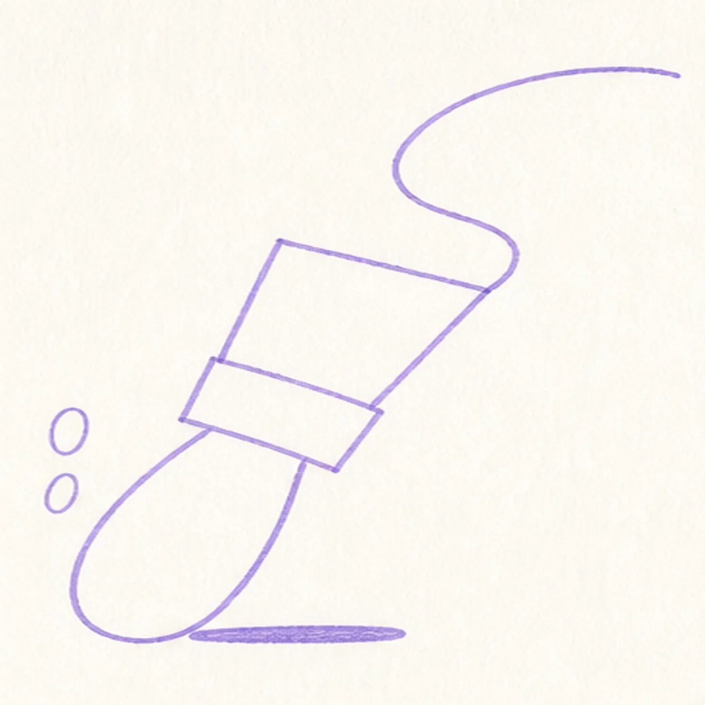
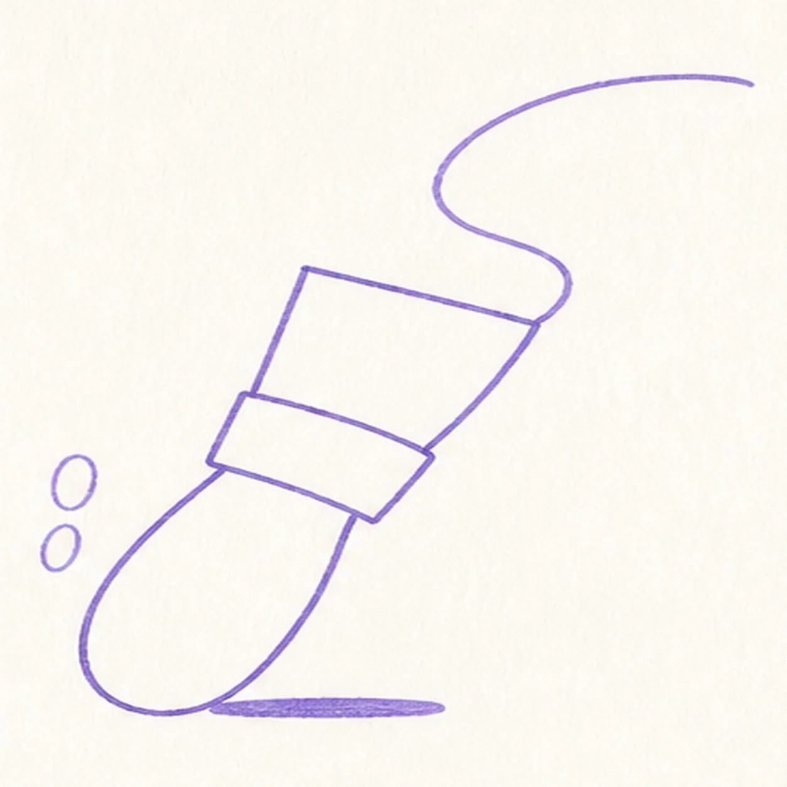
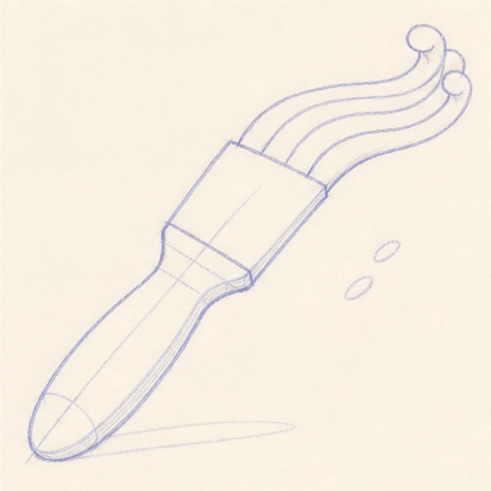
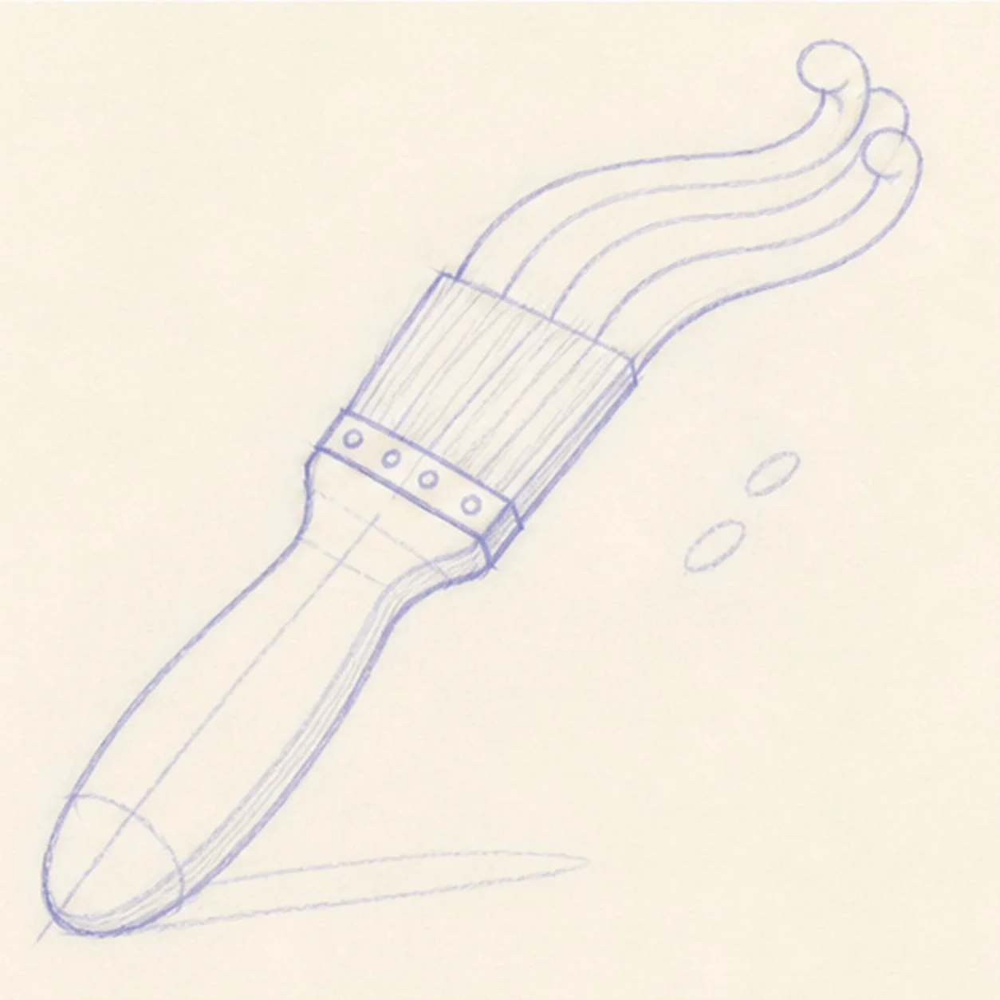
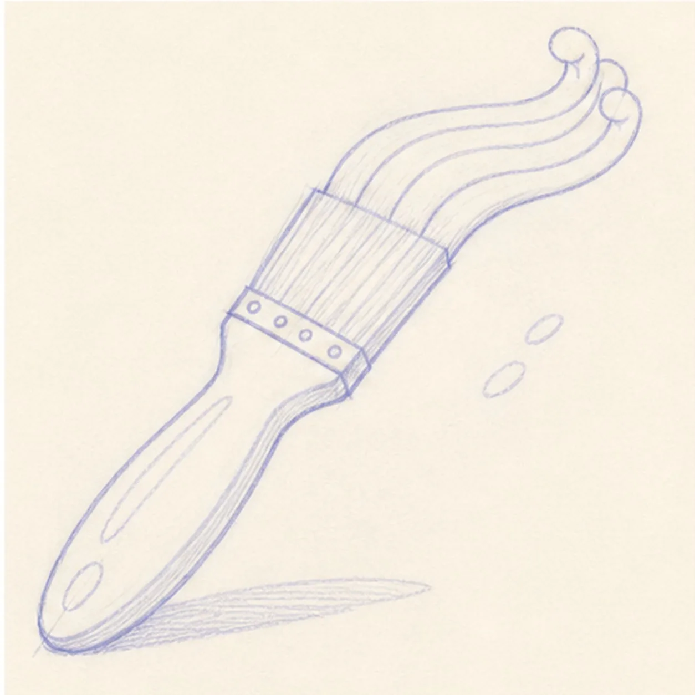
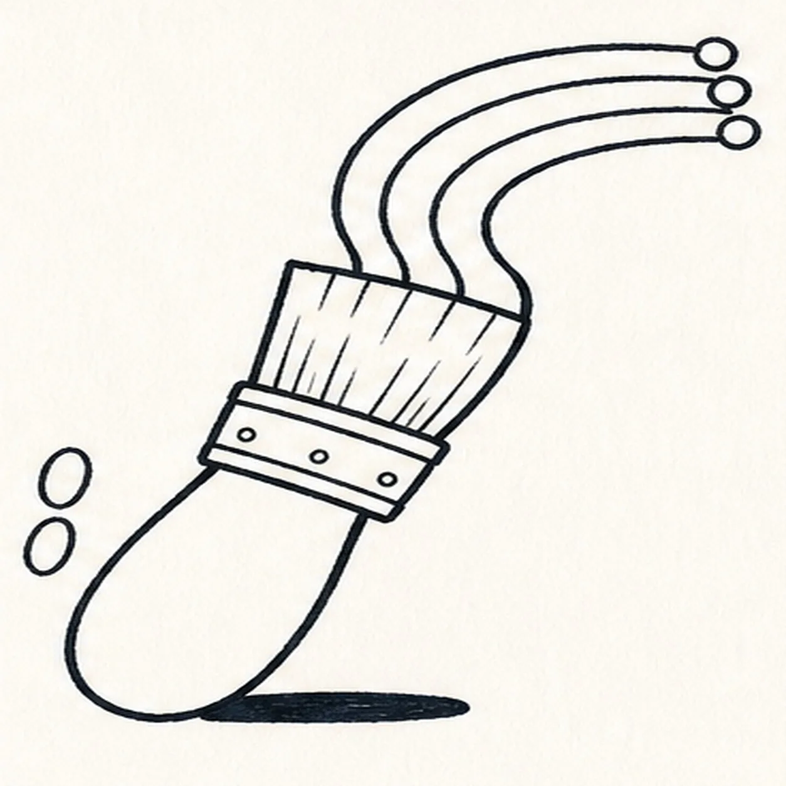
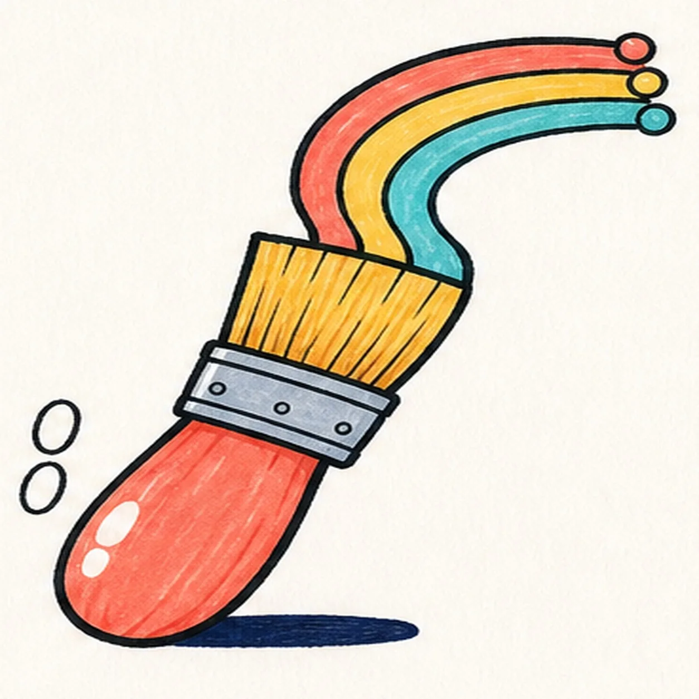

Marker ready?
Let's draw a cartoon paintbrush with rainbow paint
Treat this as one playful practice round: sketch the idea loosely, simplify the shapes, then commit with confident marker outlines and bright fills.
-
01

Map the brush tilt
Use pale pencil for one rounded handle capsule, one ferrule box, one wide bristle trapezoid, a single curling paint route, two tiny highlight ovals, and one short flat shadow footprint.
Marker tip: Ghost the lower-left to upper-right axis twice before drawing. This first frame should read as construction, not a pale finished brush.
-
02

Wrap the brush
Connect the handle, ferrule, and bristle guides into one loose angled paintbrush silhouette while keeping the paint as one guide route.
Marker tip: Keep the handle wider at its rounded end and let the ferrule edges stay parallel. Stop the bristle edge where the paint route begins so the next step joins cleanly.
-
03

Sweep three paint bands
Turn the guide into exactly three parallel uncolored paint bands that curl from the bristle edge and end in three rounded tips.
Marker tip: Draw the outer curve first, echo it twice inside, and check that the gaps remain even around the bend. Do not add stray drips or a fourth band.
-
04

Add the working details
Add the two open-paper highlights, a few simple ferrule marks, light bristle streaks, and the reserved short flat shadow.
Marker tip: Keep the bristle strokes long and in the same direction. Let the shadow sit beneath the handle instead of wrapping around it like a border.
-
05

Clarify the bristle rhythm
Refine the already-established bristle streaks and ferrule marks without changing the brush, three paint bands, highlights, or shadow.
Marker tip: Use fewer marks than you think. The bristles should still read as one broad shape at thumbnail size.
-
06

Ink the established lines
Trace only the established brush, three paint bands, highlights, texture marks, and shadow with thick, slightly wobbly black felt-tip.
Marker tip: Ink the small ferrule marks and paint tips first, then rotate the page for the long handle and paint curves. Keep the outside silhouette heaviest.
-
07

Pull in rainbow color
Fill the handle coral, ferrule blue-gray, bristles warm yellow, and the three established paint bands coral, yellow, and teal; fill the existing shadow navy.
Marker tip: Pull strokes along each long form and keep both handle highlights open. Let neighboring colors dry before they touch so the black outline stays crisp.
-
08
Finish the rainbow brush
Strengthen only established black contours and marker fills, clarify the same two paper highlights, and deepen the existing flat navy shadow.
Marker tip: Count one brush, one handle, one ferrule, one bristle tip, three paint bands, two highlights, and one shadow before stopping. Try another three-color palette later, but keep the curves parallel and the marker texture visible.
![Handmade felt-tip marker drawing of one right-facing coral-pink cartoon axolotl swimming in side view with one broad rounded head, one tapered body, one broad upward-curling tail fin, exactly four small limbs, exactly three raspberry leaf-tipped external gill stalks, one oversized round eye with a deep-navy pupil looking upward, one tiny open deep-navy diamond mouth, exactly three short cheek hatches, exactly two deep-navy dorsal spots, exactly three teal bubbles, two open-paper oval highlights on the tail, thick imperfect black outlines, visible marker streaks, and one short broken teal water-shadow swoosh](assets/cartoon-axolotl-swimming-finished-v1.webp)
![Handmade face-free felt-tip marker drawing of one thick forest-green garden hose forming one loose lower-left loop with a single over-under crossing, connected to one burnt-orange pistol-grip spray nozzle angled toward the upper right with one open-paper barrel collar, one cream trigger, one cream connector, exactly three black handle grip ribs, exactly three curved muted-blue water jets, exactly two detached blue drops, one open-paper highlight on the hose and one on the handle, thick imperfect black outlines, visible marker streaks, and one short flat irregular deep-navy ground-shadow patch](assets/garden-hose-with-spray-nozzle-finished-v1.webp)
![Handmade face-free felt-tip marker drawing of one plump raspberry-and-coral heart tilted slightly clockwise with one teal adhesive bandage crossing diagonally from lower left to upper right, one warm-yellow center pad, two rounded adhesive ends with exactly four open-paper ventilation dots total, two open-paper oval heart highlights, exactly two small warm-yellow sparkle accents, thick imperfect black outlines, visible marker streaks, a few pale construction traces, and one broken deep-navy shadow](assets/heart-with-a-bandage-finished-v1.webp)